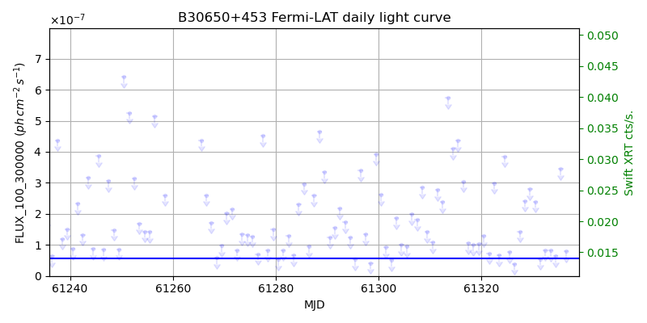
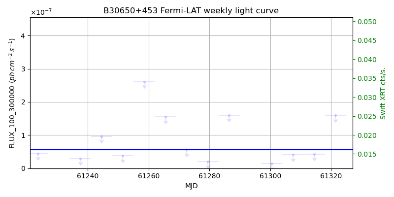
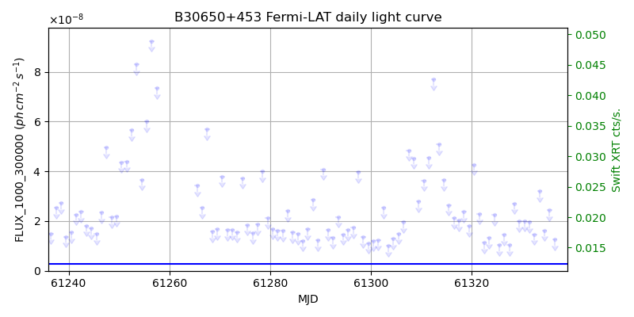
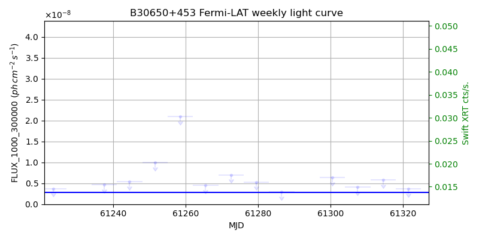

LAT Lightcurve site: https://fermi.gsfc.nasa.gov/ssc/data/access/lat/msl_lc/source/B3_0650p453
Swift site: https://www.swift.psu.edu/monitoring/source.php?source=B30650+453
NED: Query
Time of last update of this page: UT: 2026-10-24 15:17 (MJD: 61337.637)
| Property | Value |
|---|---|
| R.A. | 6:54:23.76 |
| Dec. | 45:14:24.0 |
| z | 0.933 |
| 3FGL SpectrumType | PowerLaw |
| 3FGL PL Index | 2.29 |
| 3FGL Flux_100_300000 | 5.59e-08 1 / (s cm2) |
| 3FGL Flux_1000_300000 | 2.88e-09 1 / (s cm2) |
| 3FGL Flux >200 GeV | 3.14e-12 1 / (s cm2) |
| 3FGL Extrap. Crab >200 GeV | 0.01 |
| 3FGL Flux After EBL Absorption >200GeV | 6.11e-14 1 / (s cm2) |
| 3FGL EBL Crab Fraction >200GeV | 0.00 |

| MJD | dMJD | Flux | dFlux | Frac3FGL | FracCrab>200GeV | EBLFracCrab>200GeV |
|---|---|---|---|---|---|---|
| 61332.50 | 0.50 | 8.36e-08 | 0.00e+00 | 0.00 | 0.00 | 0.00 |
| 61333.50 | 0.50 | 8.17e-08 | 0.00e+00 | 0.00 | 0.00 | 0.00 |
| 61334.50 | 0.50 | 6.38e-08 | 0.00e+00 | 0.00 | 0.00 | 0.00 |
| 61335.50 | 0.50 | 3.46e-07 | 0.00e+00 | 0.00 | 0.00 | 0.00 |
| 61336.50 | 0.50 | 7.90e-08 | 0.00e+00 | 0.00 | 0.00 | 0.00 |

| MJD | dMJD | Flux | dFlux | Frac3FGL | FracCrab>200GeV | EBLFracCrab>200GeV |
|---|---|---|---|---|---|---|
| 61286.50 | 3.50 | 1.60e-07 | 0.00e+00 | 0.00 | 0.00 | 0.00 |
| 61300.50 | 3.50 | 1.37e-08 | 0.00e+00 | 0.00 | 0.00 | 0.00 |
| 61307.50 | 3.50 | 4.05e-08 | 0.00e+00 | 0.00 | 0.00 | 0.00 |
| 61314.50 | 3.50 | 4.29e-08 | 0.00e+00 | 0.00 | 0.00 | 0.00 |
| 61321.50 | 3.50 | 1.59e-07 | 0.00e+00 | 0.00 | 0.00 | 0.00 |

| MJD | dMJD | Flux | dFlux | Frac3FGL | FracCrab>200GeV | EBLFracCrab>200GeV |
|---|---|---|---|---|---|---|
| 61332.50 | 0.50 | 1.47e-08 | 0.00e+00 | 0.00 | 0.00 | 0.00 |
| 61333.50 | 0.50 | 3.21e-08 | 0.00e+00 | 0.00 | 0.00 | 0.00 |
| 61334.50 | 0.50 | 1.62e-08 | 0.00e+00 | 0.00 | 0.00 | 0.00 |
| 61335.50 | 0.50 | 2.44e-08 | 0.00e+00 | 0.00 | 0.00 | 0.00 |
| 61336.50 | 0.50 | 1.27e-08 | 0.00e+00 | 0.00 | 0.00 | 0.00 |

| MJD | dMJD | Flux | dFlux | Frac3FGL | FracCrab>200GeV | EBLFracCrab>200GeV |
|---|---|---|---|---|---|---|
| 61286.50 | 3.50 | 2.96e-09 | 0.00e+00 | 0.00 | 0.00 | 0.00 |
| 61300.50 | 3.50 | 6.33e-09 | 0.00e+00 | 0.00 | 0.00 | 0.00 |
| 61307.50 | 3.50 | 4.08e-09 | 0.00e+00 | 0.00 | 0.00 | 0.00 |
| 61314.50 | 3.50 | 5.80e-09 | 0.00e+00 | 0.00 | 0.00 | 0.00 |
| 61321.50 | 3.50 | 3.61e-09 | 0.00e+00 | 0.00 | 0.00 | 0.00 |
--------------------------------------------------------- Using user-supplied coords: 6:54:23.76 45:14:24.0 2000 --------------------------------------------------------- FLWO UT night of: 2026-10-25 Local Sid. @ Midnight: 01:50 Sunset (-15.0) (local, UT): 18:49 01:49 Sunrise (-15.0) (local, UT): 05:27 12:27 Moonrise (local, UT): Moonset (local, UT): Moon phase: 0.99 --------------------------------------------------------- AzTime LSID UT Obj_el Obj_az Mn_el Mn_az Sep. --------------------------------------------------------- 18:49 20:39 01:49 -9.6 18.1 26.2 94.5 82.3 19:19 21:09 02:19 -7.4 22.9 32.4 98.6 82.1 19:49 21:39 02:49 -3.4 27.5 38.6 103.2 81.8 20:19 22:09 03:19 -0.7 31.8 44.7 108.4 81.6 20:49 22:39 03:49 2.3 35.7 50.6 114.6 81.4 21:19 23:09 04:19 6.1 39.3 56.2 122.3 81.2 21:49 23:39 04:49 10.2 42.5 61.2 132.2 80.9 22:19 00:09 05:19 14.6 45.5 65.5 145.3 80.7 22:49 00:39 05:49 19.3 48.1 68.4 162.2 80.5 23:19 01:10 06:19 24.1 50.4 69.4 182.2 80.3 23:49 01:40 06:49 29.1 52.4 68.2 202.0 80.1 00:19 02:10 07:19 34.3 53.9 65.1 218.6 79.9 00:49 02:40 07:49 39.5 55.1 60.8 231.3 79.7 01:19 03:10 08:19 44.7 55.8 55.7 240.9 79.5 01:49 03:40 08:49 50.0 55.8 50.1 248.5 79.3 02:19 04:10 09:19 55.3 55.0 44.3 254.6 79.1 02:49 04:40 09:49 60.5 52.9 38.2 259.8 78.9 03:19 05:10 10:19 65.5 49.0 32.1 264.4 78.7 03:49 05:40 10:49 70.0 41.9 26.0 268.5 78.4 04:19 06:10 11:19 73.8 29.9 19.9 272.4 78.2 04:49 06:40 11:49 76.1 11.4 13.8 276.2 77.9 05:19 07:11 12:19 76.2 349.1 7.8 279.9 77.7 05:27 07:18 12:27 75.8 343.7 6.2 280.9 77.6 --------------------------------------------------------- Moon up all night, no dark time. Dark hours >55 deg.: 0.00